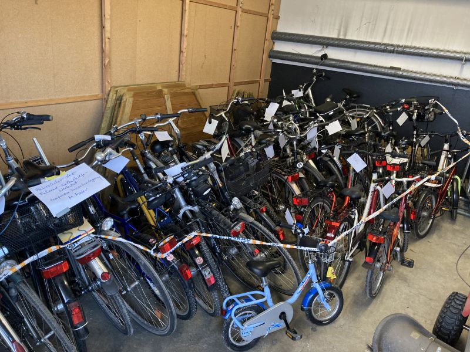

Hier geht es zu unseren ⏱️ Eilmeldungen und zu 🤝 Kontakte.
Radtour in der Umgebung Hemmingen / Pattensen
Am Sonntag starten wir mit einer Rad-Entdeckungsreise in der Umgebung vom Hemmingen und Pattensen. Lassen Sie sich überraschen.
Gestartet wird
- am: Sonntag 12.06.2022
- um: 11:00
- am: Hemminger Rathausplatz
Die voraussichtlich Dauer wird ca. 3 Stunden betragen.
Natürlich werden wir die notwendigen Corona Sicherheitsmassnahmen weiterhin einhalten, daher möchten …
Zwischenstand Stadtradeln 2022
Unser Zwischenstand am 2022-06-10 um 17:30
Hemmingen
- Absolute km: 52,194
- km pro Einwohner: 2,76 - Platz 3. in der Region Hannover
- Parlamentarier km: 25,7 - Platz 3. in der Region Hannover
Pattensen
- Absolute km: 30,472
- km pro Einwohner: 2,17 - Platz 5. in der Region Hannover
- Parlamentarier …
Ernst-Reuter-Schule beteiligt sich am Stadtradeln
Quelle: HAZ Pattensen
Die Ernst-Reuter-Schule beteiligt sich auch dieses Jahr wieder am Stadtradeln. Es beteiligen sich sowohl Lehrer:innen als Schüler und Schülerinnen.
Markiert als: PattensenStadtradeln 2022 Auftakt erfolgreich!
Rund 40 Radlerinnen und Radler aus Hemmingen und Pattensen sind mit einem Radler-Frühstück von Mutter Buermann aus in Richtung Herrenhäuser Gärten gestartet. Zuvor gab es noch eine kleine Tombola mit verschiedenen Preisen, wie zum Beispiel eine Fahrradklingel. Von Herrenhausen aus ging es dann zusammen mit den Radlern aus Hannover in …
Stadtradeln Auftakt 2022
Es ist soweit, das Stadtradeln vom 29.05. - 18.06.22 steht kurz bevor und ihr seid alle eingeladen mitzumachen.
Anmeldung unter https://www.stadtradeln.de
Ihr könnt ein eigenes Team anlegen, oder einem vorhandenen Team beitreten, z.B. “ADFC Hemmingen”.Jeder Kilometer zählt, viel Spass dabei.
Wir starten am …
Jan Dingeldey der Stadtradel-Star
Unser Hemminger Bürgermeister Jan Dingeldey hat sein Auto für die nächsten 3 Wochen in einen See-Container verschlossen und ist aufs Fahrrad umgestiegen.
Sein Ziel ist es möglichst jeden Privatweg als auch jeden Dienstweg mit dem Fahrrad zurückzulegen.
Dafür stehen ihm zwei Dienst E-Bikes als auch das Hemminger Lastenrad Hannah zur …
STADTRADELN 2022
Der ADFC Hemmingen Pattensen beteiligt sich auch 2022 gemeinsam mit den Städten Hemmingen und Pattensen an der bundesweiten Aktion STADTRADELN vom 29.05. bis zum 18. Juni 2022 und lädt zum Mitmachen ein.
Die Idee und der Wettbewerb
Beim Stadtradeln sollen sich auch diesmal Teams bilden und während des Aktionszeitraums …
Markiert als: TourenFahrbahn der Ortsdurchfahrt Wilkenburg wird saniert
Text der Web-Seite www.stadthemmingen.de
Auf der L389 wird ab 01. Juni 2022 die Fahrbahn sowie der Gehweg erneuert. Die Arbeiten erfolgen zunächst unter halbseitiger Sperrung.
Während der Bauarbeiten wird den Anwohnerinnen und Anwohnern der Landesstraße eine Zuwegung zu ihren Grundstücken zur Verfügung gestellt, jedoch ist mit Behinderungen / kurzzeitigen …
Grünes Stadtgespräch in der Fahrrad-Selbsthilfe-Werkstatt
Die Hemminger Bündnesgrünen richteten Ihr 46. Stadtgespräch am 25.5.2022 in der Fahrrad-Selbsthilfe-Werkstatt aus. Ehrenamtliche der Fahrrad-Selbsthilfe-Werkstatt stellten die Fahrradausgabe und Werkstatt vor. Der komplette Prozess, vom Erhalt der Spendenräder, über die verkehrstechnische Aufarbeitung und dokumentierte Ausgabe am Bedürftige, wurde erläutert. Weiterhin wurde von den vielzähligen Fahrradreparaturen für jedermann …
Spende für die Fahrrad-Selbsthilfe-Werkstatt
Im Rahmen eines audiovisuellen Vortrags im voll besetzten Hemminger Bauhof hat Rainer Dorau der Fahrrad-Selbsthilfe-Werkstatt anteilig die Hälfte der abendlichen Einnahmen gespendet und einen symbolischen Scheck über 250 Euro überreicht. Titel der Präsentation war „Mit dem Fahrrad durch Jordanien vom Roten Meer zum Toten Meer und wieder zurück“. Eine solche …
Markiert als: SpendenArbeitsgemeinschaft (AG) Radverkehr in Hemmingen
2022-05-28
Einen Termin für das AG-Radverkehr-Treffen 2022 gibt es noch nicht.
2019-08-15
Der Ausschusses für Stadtentwicklung und Umwelt hat am 15. Aug. 2019 beschlossen, dass zur Umsetzung des Radverkehrskonzeptes eine Arbeitsgemeinschaft (AG) Radverkehr gebildet wird, die mindestens einmal im Jahr tagt. Die Zusammensetzung soll sich an dem Teilnehmerkreis orientieren, der …
MIT-DEM-RAD-ZUR-ARBEIT
Vom 01. Mai und bis 31. August 2022 läuft die ADFC/AOK-Aktion Mit-dem-Rad-zur-Arbeit. Auch hier konnten alle mitmachen, es zählten aber nur die Kilometer zur und von der Arbeit.
Alle Informationen gab es auf https://www.mit-dem-rad-zur-arbeit.de/niedersachsen/index.php
Markiert als: TourenDie ADFC Fahrrad-Selbsthilfe-Werkstatt bedankt sich herzlich für die hohe Spendenbereitschaft

Nach einem Aufruf in der Presse erfuhr das Team der Fahrrad-Selbsthilfe-Werkstatt eine unglaublich hohe Resonanz aus der Bevölkerung. Innerhalb von zwei Wochen wurden bereits jetzt über 40 Spendenräder abgeholt oder in der Heinrich-Hertz-Straße 23 während der Werkstatt-Öffnung abgegeben. Dabei kamen die Spendenden nicht nur aus Hemmingen, sondern auch aus Pattensen …
Markiert als: SpendenFahrradtouren 2022
Unsere geplanten und durchgeführten Fahrradtouren 2022
Markiert als: TourenFahrrad-Selbsthilfewerkstatt

Die Fahrrad-Selbsthilfe-Werkstatt (FSW) des ADFC Hemmingen/Pattensen in der Heinrich-Hertz-Straße 23 in Hemmingen wird, nach der Delta- und Omikron-Pause, ab dem 22. März 2022 den Notbetrieb wieder aufnehmen. Wenn die aktuelle Baustellensituation es zulässt, wird Dienstags von 17:30 bis 19:00 jemand vor Ort sein und Sie im Außenbereich …
Verwarnung nach Engagement gegen Falschparker
Deutsche Umwelthilfe unterstützt Musterverfahren zum Schutz von Fußgängern und Fahrradfahrern. Aus Presseportal.
Die Deutsche Umwelthilfe (DUH) unterstützt in einem Musterverfahren die Klage eines Münchner Bürgers, der sich für sichere Geh- und Radwege engagiert, Verstöße fotografisch dokumentiert und nun wegen eines angeblichen Verstoßes gegen den Datenschutz verwarnt wurde. Der betroffene Bürger …
Tempo 30 in Gleidingen
Die Stadt Laatzen hat Tempo 30 für die Durchfahrt durch Gleidingen angeordnet. Seit Jahren kämpfen Anwohner für Tempo 30. Bislang gab es rechtliche Hürden. Tempo 30 war demnach nur vor sensiblen Einrichtungen wie Kitas möglich. Nun wurden die Werte eines neuen Lärmschutzgutachtens herangezogen. Diese Werte überschreiten die Lärmschutzrichtlinien für allgemeine …
Stadt investiert 150000 Euro in bessere Radwege
Quelle: HAZ Hemmingen und AG-Radverkehr
Die Stadt Hemmingen investiert 150000 Euro in bessere Radwege. Der Rat der Stadt ist den Empfehlungen der AG-Radverkehr gefolgt und hat die Gelder bewilligt. Geplant sind für 2022:
- Die Asphaltierung des Abschnitts zwischen der Weetzener Landstraße und der Alfred-Bentz-Straße.
- Die Sanierung der Schäden auf dem …
Linderter Dorfinitiative pocht weiter auf Umsetzung ihres Fahrradkonzeptes
Quelle: HAZ vom 9.3.2022
Die Initiative “Lebenswertes Linderte” hat einen Katalog mit 31 Maßnahmen zur Verbesserung des Lebens in Linderte erstellt. Es gibt keine Erfolge, wie zum Beispiel ein aufgestellter Verkehrsspiegel, aber man muss immer wieder bei den Verantwortlichen nachhaken. Ein Radweg in Richtung Hiddestorf, scheint aber wegen …